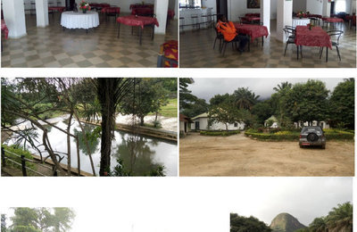
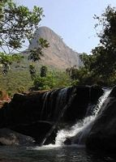

Les cascades du Soumba
Un site touristique naturel et authentique
Un site touristique naturel et authentique
La merveille de Soumba est un site également magnifique.
Située à 800mètres de la déviation de Dubreka vers les cascades de soumba, ce site est un prolongement du fleuve de soumba venant des cascades
Il possède une piscine naturelle avec une eau douce à la bonne température, un restaurant et un hôtel composé de chambre en cases
A la différence des chutes, la merveille possède a toujours de l'eau quelque soit la saison.
Ce sont deux sites proches, l'un à la suite de l'autre que vous pourriez visité en un voyage.

